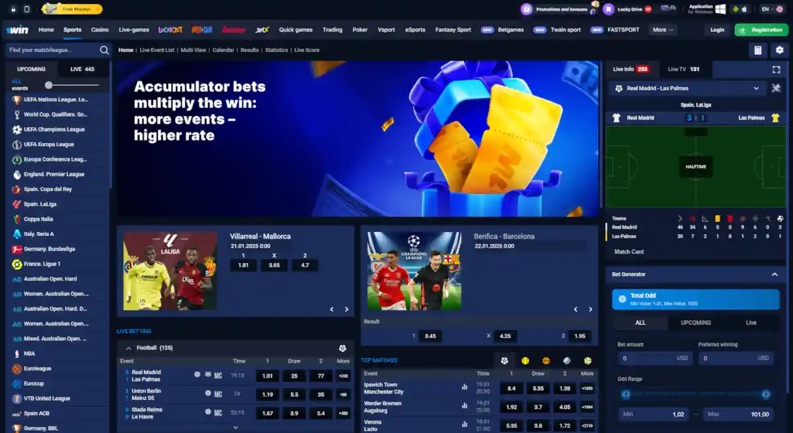
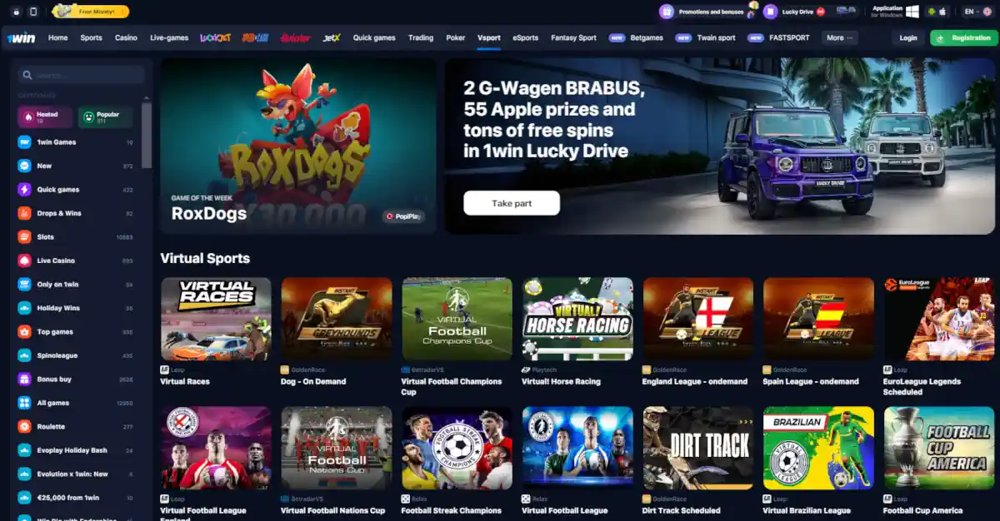
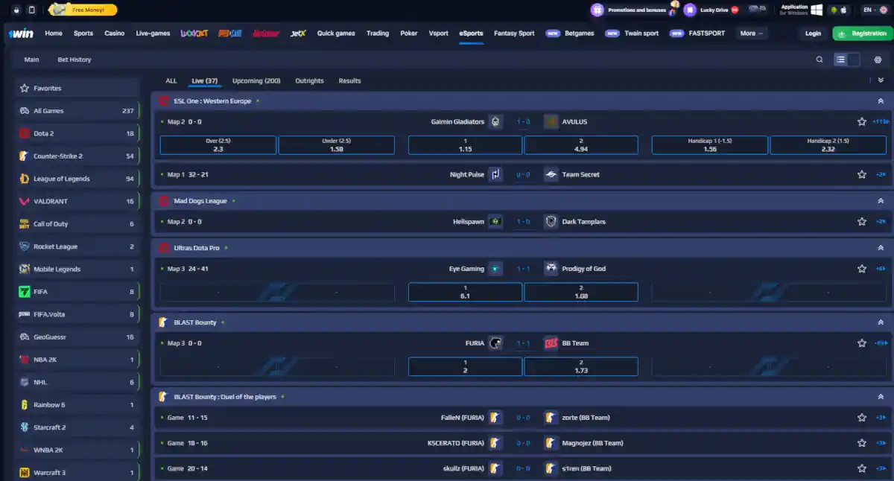
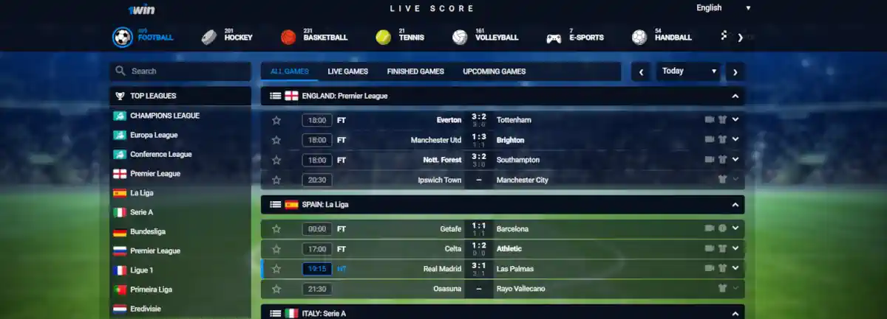

1Win Bet Tanzania Brings You the Ultimate Betting Experience
Sports betting in Tanzania has been gaining traction over the years, and 1Win Bet has established itself as a strong contender in the industry. With a growing number of bettors looking for reliable platforms, this operator provides a mix of sports markets, casino games, and promotions.
Whether you're a casual punter or a dedicated player, understanding the platform's features, advantages, and potential drawbacks is essential. This 1Win Bet review breaks down everything about the bookmaker, covering its key offerings, functionality, and what bettors in Tanzania can expect.

Table of contents
General Information on Sports Betting
Sports betting is a major part of the gambling industry in Tanzania, and 1Win Bet Tanzania offers access to a variety of sporting events, including football, basketball, tennis, and more. The platform allows users to place bets on both local and international leagues, making it appealing to a broad audience.
Key features of sports betting include:
- Pre-match and live betting – Players can place wagers before the game starts or engage in real-time betting.
- Competitive odds – The platform provides competitive market odds for different sports.
- Multiple bet types – From single bets to accumulators and system bets, users can tailor their betting strategy.
- E-sports betting – A growing trend, allowing bets on popular video game competitions.
The platform is structured to accommodate both new and experienced bettors, ensuring smooth navigation and straightforward bet placement.
1Win Bet Features
There are several aspects that make 1 Win Bet stand out in the Tanzanian market. Here’s what makes it a preferred choice for many bettors:
- Wide Sports Coverage – Football, basketball, cricket, rugby, tennis, and e-sports are just a few of the betting options available.
- Casino and Live Casino – Alongside sports betting, users can access a full casino section featuring slots, table games, and live dealer experiences.
- Live Streaming & In-Play Betting – A real-time betting feature allows users to place wagers on ongoing matches while watching live streams.
- Promotional Offers – From 1Win free bet promotions to loyalty programs, the platform provides a variety of incentives.
- User-Friendly Interface – The site is designed to work smoothly on both desktop and mobile devices.
- Licensed & Secure – The operator follows security protocols, ensuring that user data and transactions are safe.
1Win Bet Tanzania aims to deliver a comprehensive betting experience that caters to different types of players.
Key Information
| 📌 Category | 🔍 Details |
|---|---|
| 📆 Founded | 2016 |
| 💰 Minimum Bet | 1,000 TZS |
| 🎯 Maximum Bet | Varies by event and market |
| ⚽ Sports Betting | Football, Basketball, Tennis, Cricket, Rugby, Esports, Virtual Sports |
| 🏆 Live Betting | Yes, with real-time odds and streaming |
| 📱 Mobile App | Available for Android & iOS |
| 💳 Deposit Methods | Mobile Money, Bank Transfer, E-wallets, Crypto |
| 💸 Withdrawal Time | 24-48 hours (varies by method) |
| 🎁 Bonuses | Welcome bonus, free bets, cashback, promo codes |
| 🔍 Promo Code | Available for new and existing players |
| 🛡️ Security | Encrypted transactions and data protection |
| 🎟️ Bet Types | Single, Accumulator, System Bets, Live Bets |
| 📞 Customer Support | Live chat, email, phone |
| 🌍 Languages | English, Swahili |
Pros and Cons of the Bookmaker
Like any betting platform, 1Win has its strengths and weaknesses. Evaluating these can help users make an informed decision before signing up.
Pros:
- Diverse Betting Markets – Offers both traditional sports and virtual sports betting.
- Generous Bonuses – New players can claim promotions such as the 1Win Bet promo code for additional benefits.
- Fast Registration Process – Quick sign-up and verification through 1Win Bet ID check.
- Mobile Compatibility – A well-optimized mobile site and dedicated app for easy access.
- Various Payment Methods – Supports multiple deposit and 1Win Bet withdrawal options.
Cons:
- Limited Local Payment Options – Some Tanzanian users may find a lack of locally preferred payment gateways.
- High Wagering Requirements – Bonus terms require careful reading to avoid misunderstandings.
Despite some downsides, the bookmaker remains a solid choice for bettors in Tanzania, offering a broad range of sports, competitive odds, and ongoing promotions.

1Win Bet Available Games and Sports Events
One of the key strengths of 1Win Bet Tanzania is its wide selection of sports events and casino games. Whether you are interested in traditional sports betting, virtual sports, or casino games, the platform offers something for every type of player.
Sports Betting
Players can bet on a variety of sporting events, both local and international. Some of the most popular options include:
- Football – Covering major leagues like the English Premier League, La Liga, Serie A, and Tanzania’s NBC Premier League.
- Basketball – Betting on NBA, EuroLeague, and international tournaments.
- Tennis – Wagering on ATP, WTA, and Grand Slam events.
- Cricket – Options include international matches, IPL, and regional leagues.
- E-sports – Popular games like CS:GO, Dota 2, and League of Legends are available for betting.
- Virtual Sports – Simulated sports games with fast results and frequent betting opportunities.
1Win Bet Bonuses
Bonuses are an essential part of the betting experience, and 1Win Bet Tanzania offers several promotions to attract and retain players.
Welcome Bonus
New players can take advantage of a generous welcome package, which often includes:
- A deposit match bonus that increases the first deposit amount.
- Free bets that can be used on selected sports events.
- Casino bonuses that provide extra funds for slot and table games.
To activate the bonus, players may need to use a promo code during registration or when making their first deposit.
Other Promotions
Existing players can benefit from ongoing promotions such as:
- Cashback Offers – A percentage of lost bets returned to the player’s account.
- Free Bets – Occasionally provided as part of promotions, including 1Win free bet offers.
- Tournaments and Leaderboards – Special competitions where players can win cash prizes or bonus funds.
Checking the promotions section on the 1Win Bet site ensures that players don’t miss out on the latest offers.

1Win Bet Registration
Signing up on 1Win Bet Tanzania is a simple and fast process. The platform provides an easy-to-follow registration system that allows players to create an account within minutes.
How to Register
- Visit the official website – Open the site using a browser on your computer or mobile device.
- Click on the Sign-Up button – This will take you to the registration form.
- Enter required details – Provide your phone number, email, and preferred currency.
- Use a promo code (if available) – If you have a 1Win Bet promo code, enter it to claim your welcome bonus.
- Confirm registration – Complete the process by verifying your email or phone number.
After registration, users may need to go through the 1Win Bet ID check process to verify their identity before making withdrawals.
1Win Bet Login
Once an account is created, logging into 1 Win Bet Tanzania is straightforward.
Steps to Log In
- Go to the official website – Open the site or launch the mobile app.
- Click on the Login button – Located at the top-right corner of the homepage.
- Enter your credentials – Provide your registered email or phone number and password.
- Access your account – Click the login button to enter the platform.
For security reasons, players who forget their passwords can use the password recovery option.
After a certain period of inactivity, 1 Win Bet may require users to re-enter their credentials for security purposes.
1Win Bet Deposits and Withdrawals
A reliable betting platform needs smooth and secure transaction options, and 1 Win Bet Tanzania offers multiple methods for deposits and withdrawals. Whether you're funding your account or cashing out winnings, the process is straightforward.
Deposit Methods
Players can fund their accounts using several options:
- Mobile Money Services – Popular in Tanzania, services like M-Pesa and Airtel Money allow instant deposits.
- Bank Transfers – Direct transactions through local banks, though processing times may vary.
- Credit/Debit Cards – VISA and Mastercard support for secure payments.
- E-wallets and Cryptocurrencies – Alternative digital payment methods for fast processing.
Deposits usually reflect instantly, ensuring bettors can start wagering without delay.
Withdrawal Process
Withdrawing winnings is equally simple, with options including:
- Mobile Money Withdrawals – Fast and commonly used by local players.
- Bank Withdrawals – A secure method but may take longer to process.
- E-wallets and Crypto – Quick and preferred by users seeking faster transactions.
Before requesting a 1Win Bet withdrawal, users may need to complete a 1Win Bet ID check for security verification. Processing times depend on the selected payment method, but most withdrawals are handled within 24 to 48 hours.
1Win Bet App
For bettors who prefer mobile access, the app provides a convenient way to place bets on the go. The app mirrors the desktop experience, ensuring full access to sports betting, casino games, and account management.
Benefits of the Mobile App
- User-Friendly Interface – Optimized for quick navigation and smooth performance.
- Live Betting & Streaming – Real-time sports betting with live match coverage.
- Push Notifications – Alerts for bets, promotions, and game updates.
- Optimized Performance – Faster loading times compared to mobile browsers.
How to Download and Install
Go to the official site – The site provides direct download links for Android and iOS.
- Download the APP file (Android) – Since the app isn’t available on Google Play, Android users need to install it manually.
- Install the app – Enable "Install from Unknown Sources" in phone settings if needed.
- For iOS users – The app can be downloaded directly from the App Store if available in the region.
Once installed, users can log in and start betting immediately, making the 1Win Bet app a preferred choice for mobile users.

Author’s Opinion
After reviewing 1Win Bet Tanzania, it’s clear that the platform provides a solid betting experience. It offers a wide variety of sports markets, casino games, and promotional offers like the 1Win Bet promo code.
The mobile app enhances accessibility, and the deposit/withdrawal process is straightforward. The inclusion of 1Win free bet promotions adds extra value for new and existing players.
The only downside is that some withdrawal methods may take longer, especially for bank transfers. However, this is a common issue across most betting platforms.
1Win Bet is real or fake? The platform is legitimate, providing a reliable betting experience for Tanzanian players.
FAQ
How can I create an account?
To register, visit the official website, enter your details, and complete the sign-up process. A verification step may be required.
What should I do if I forget my password?
Use the "Forgot Password" option on the login page and follow the instructions to reset your password.
Are there any fees for deposits and withdrawals?
Most deposit methods do not have fees, but withdrawal charges may apply depending on the selected payment option.
Is customer support available?
Yes, support is available through live chat, email, or phone. Response times vary depending on the contact method.
Can I bet on live games?
Yes, the platform offers live betting, allowing users to place bets on ongoing matches in real time.